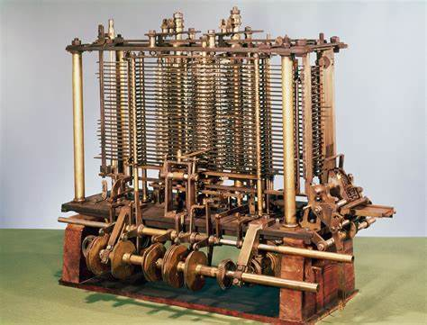

La historia de la computación se remonta a miles de años atrás, a las primeras herramientas que ayudaban al ser humano en sus tareas matemáticas. El ábaco, inventado en Mesopotamia alrededor del año 2400 a. C., fue uno de los primeros dispositivos de cálculo. Las décadas siguientes vieron un rápido desarrollo de las computadoras. Las primeras generaciones se caracterizaban por su tamaño voluminoso y su uso limitado a científicos e ingenieros.
A lo largo de los siglos, se desarrollaron diversos instrumentos para facilitar el cálculo, como la regla de cálculo (siglo XVII) o la pascalina (siglo XVII), inventada por Blaise Pascal. La invención del microprocesador en la década de 1970 marcó un punto de inflexión. Las microcomputadoras, como la Apple II y la IBM PC, permitieron que la informática llegara al público en general.
Charles Babbage, un matemático e inventor británico, es considerado el padre de la computadora. A principios del siglo XIX, diseñó la máquina analítica, considerada la primera computadora de propósito general. Aunque nunca se construyó completamente, la máquina analítica sentó las bases para las computadoras modernas. La llegada de Internet en la década de 1980 revolucionó el mundo de la computación. La interconexión de computadoras a nivel global posibilitó el intercambio instantáneo de información y el desarrollo de nuevas tecnologías como el correo electrónico, la web y las redes sociales.
A mediados del siglo XX, se produjo un gran avance con la invención de la computadora electrónica. La primera computadora electrónica digital fue la ENIAC (Electronic Numerical Integrator and Computer), desarrollada en 1946 por John Mauchly y J. Presper Eckert en la Universidad de Pensilvania.Los pioneros de la computación, como Charles Babbage, John Mauchly y J. Presper Eckert, nos han dejado un legado invaluable. Sus ideas y su trabajo han hecho posible que las computadoras se conviertan en herramientas esenciales para el desarrollo de la sociedad.